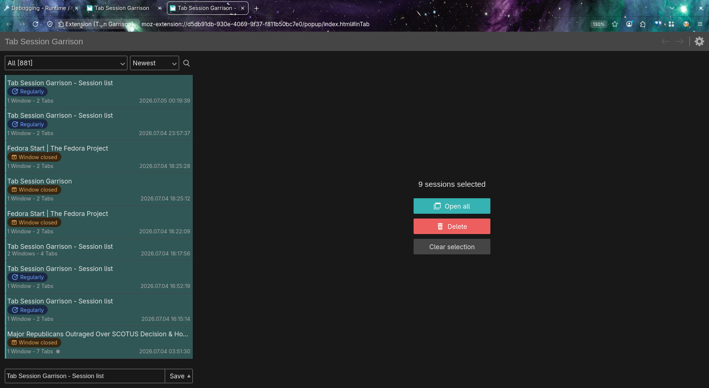

Save, restore, and wrangle hundreds of sessions — without leaving the keyboard.
A power-user fork of Tab Session Manager for Firefox. Everything the original does — save/restore, auto-save, tags, search, native tab groups — plus full keyboard navigation, multi-select, bulk actions with a single undo-all, and speed that holds up on big profiles.
Firefox only · you install it yourself (self-signed, auto-updating) · no telemetry

It's a fork of Tab Session Manager — the whole engine is kept; power-user ergonomics and speed are added on top.
| Full-session save/restore | Keyboard multi-select | Bulk actions + undo-all | Tab-group aware | Fast on large profiles | |
|---|---|---|---|---|---|
| Firefox built-in restore | ~ | ✗ | ✗ | ~ | ~ |
| OneTab | ✓ | ✗ | ~ | ✗ | ✓ |
| Tab Session Manager | ✓ | ✗ | ~ | ✓ | ✗ |
| Tab Session Garrison | ✓ | ✓ | ✓ | ✓ | ✓ |
Built for selecting, restoring, and clearing sessions at speed — mouse optional.
Ctrl/Cmd-click, Shift-click ranges, or the keyboard: arrows to move, Shift+arrows to extend, Space to toggle, Ctrl+A to select all (respecting your filter).
Open every selected session at once — each in its own window — or clear dozens of stale auto-saves in one go, with a single undo-all if you misfire.
Colored dots on each row and named chips grouped by window in the detail pane. Drop a saved session into your current window as one tidy named group.
Every session shows how it was saved — Manual Save (green), Regularly (blue), Window closed (amber), Browser exited (red) — so deliberate saves stand out from the noise.
Fixes an upstream bug where periodic auto-save could silently stop after the browser suspended or restarted — the alarm now self-heals.
With Save tab groups turned off, restoring no longer recreates — and re-saves — the groups you opted out of. Tabs come back flat.
The popup was rebuilt to stay responsive when you've got hundreds — or thousands — of saved sessions.
Selecting, searching, and arrow-keying stay snappy: per-row array scans were replaced with Map / Set lookups, so a keystroke no longer walks the whole list.
With content-visibility, the browser only lays out and paints the rows you can actually see — the rest wait until you scroll to them.
Deleting dozens of sessions used to rewrite the whole undo history per item. Now it's a single batched operation with one screen update — near-instant.
Honest about what's next.
ghb → GitHub), results ranked by match quality with the best hit floated to the top, matched characters highlighted, and URLs searched — not just titles.